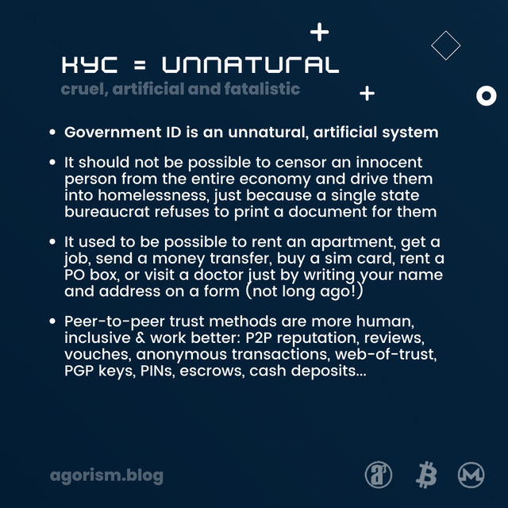
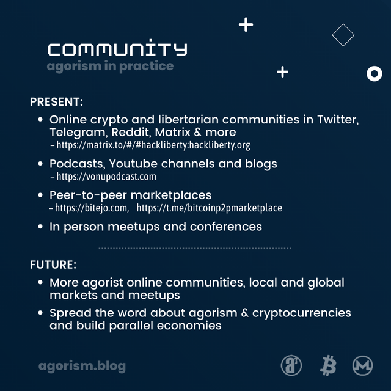

Fair and free markets for food, jobs, housing, healthcare, mail, sim cards & more – no government ID or state permit required.
Video: survival-outside-the-state.mp4 (Subtitles: survival-outside-the-state.vtt)
Peertube mirror: https://tube.tchncs.de/w/9xvdnjBB64gXRrdES7N4se
Odysee mirror: https://odysee.com/@anarkio:a/survival-outside-the-state:f
Youtube mirror: https://youtube.com/watch?v=4LkKC5xqU8A
How to survive outside of the state.
Advanced privacy, sovereignty and censorship-resistance techniques, which work today.
The current system is broken. The state has total control over the white market economy.
The state's largest mechanism for surveillance and censorship is the government ID system, also known as KYC.
The state forces employers, landlords, doctors, banks, ISPs, cell providers, mailmen and even gyms and libraries to require government ID. Without a passport or driver's license, it becomes difficult to find a job or a place to live.
Not only does this put innocent people under constant state surveillance, it also excludes approximately 1 billion people worldwide from the economy.
KYC isn't only about “handing over your data”. If that would be the case, it would be enough to simply say your name or fill out a form. Instead, only people with a state-assigned document are permitted to take part. The state's monopoly on identity ignores reality, in favor of gatekept databases and centralized control.
Fortunately, agorism bypasses the state's systems and allows everyone to take part in free and fair markets. With agorism, you can find work, rent apartments, receive healthcare and more – no government ID or state permit required.
One problem with the state's monopoly on identity is surveillance, which stretches far beyond the tracking and surveillance capitalism of Big Tech.
Via government ID systems, the state tracks innocent people from birth certificate to death certificate. It compiles databases of names, birth dates, photos, home addresses, jobs, bank balances, medical records and more. Which it shares with third parties without the individual's knowledge or consent.
This level of data collection is unnecessary. For example: Buying bread or a bus ticket with cash doesn't require a name. Medical records should stay between the doctor and patient. Many people only share their home address with close friends and family.
Government ID requirements can also put people in danger, such as people who are escaping from abuse or activists who are using a pseudonym for safety reasons.
What is worse than surveillance, is total censorship.
The state actively refuses to print ID for millions of people, which shuts them out of the mainstream economy and makes it difficult to survive.
If your country of birth or residence refuses to print a birth certificate, passport or national ID card for you, there is nowhere to go and no appeals.
Even if you have witnesses, are a skilled worker, can prove your identity via non-government records, or are willing to give fingerprints, there is no way to convince the state to enter you into its database. In most cases, this problem starts at birth or early adulthood, and the individual has done nothing wrong.
NGOs like Red Cross and United Nations are aware of the exclusion and discrimination caused by government ID systems, but they are unable to convince the state, nor offer alternative IDs. Jurisdictional arbitrage like Flag Theory requires an already existing ID. Even the Californian driver's license for undocumented people requires an existing international passport or ID card from another country.
Old strategies like paper tripping no longer work. It's difficult to find so-called corrupt bureaucrats who would print ID for you under-the-table. In many countries, it's difficult to find fake ID vendors, and if you can find one, it may not work to open a bank account or find a job.
Ignored, blamed and even criminalized by the state, millions of people are left on the edge of society without recourse and with great difficulty to even earn money or find a place to live.
Authoritarianism is increasing globally. Every year, more services require government ID, shutting people without ID or who need privacy or pseudonymity further out of the economy.
During corona statism, vaccine passports required not only an untested vaccine, but also an existing government ID. In some countries, cops and soldiers patrolled the streets during lockdowns and demanded ID from innocent people. As is clear to most people, this wasn't about health, but about control.
Digital IDs and CBDCs will make it worse. The claim that digital IDs will help unbanked people is a lie that uses vulnerable people as an excuse, while continuing to deny them access to the economy.
Just like the current system, access to Digital IDs and CBDCs will require an existing entry in the state's database. Giving your name and fingerprints will not be enough, if you weren't already registered at birth.
If the state really wanted to promote inclusion, it would remove the barriers to obtaining ID, or remove ID requirements entirely. There is nothing blocking the state from this. The exclusion is intentional, and the system is working as designed.
If the goal was indeed mass surveillance, or even profiteering from money printing and taxation, the state would have no issue with entering people into its database. In reality, the state's pathological desire to bully, deprive and ostracize is stronger than its desire to simply surveil and profit.
The pervasiveness of digital ID will only make survival more difficult for marginalized people. For example, if grocery stores only accept CBDCs to buy food, and access to public transit requires Digital ID.
In addition, even people who currently have access to ID are at risk of exclusion from the upcoming Digital ID system. Corporate deplatforming is already a huge issue, and a centralized single point of failure like CBDCs will make this worse. Anyone who resists could easily be cut off from the statist white market.
Agorism is already a necessity for many people today, and will become vital for many more, as state authoritarianism increases.

As you can see, government ID is nothing more than an artificial system, designed to control, surveil and dehumanize.
It should not be possible to exclude an innocent person from the entire economy and even push them to homelessness, just because a singular state bureaucrat doesn't want to print a document for them. Everyone has a name, appearance, background and personhood. You should not need the state's permission in order to have a name or to exist.
KYC wasn't around forever. Even a few years ago, it was easy to rent an apartment, find work, send a money transfer, or buy a sim card, just by filling out a form and paying. This authoritarian power grab is new and unnecessary. Things worked perfectly fine before.
Peer-to-peer trust methods are more inclusive, humane and work better. This can be as simple as saying your name, using a PIN to pickup mail, a vouch or portfolio to get a job, or a cash deposit for a rental.
Instead of relying on state permission, agorist markets provide a much-needed alternative method to find work, housing, healthcare and more.
Agorism has worked since decades, including in authoritarian regimes, where it is needed the most. Agorist markets are also known as gray and black markets, the informal economy, the underground, and Second Realms.
There are many reasons to bypass state regulations when doing business, such as saving time and money, avoiding censorship or restrictions, protecting your privacy, or ideological or humanitarian reasons.
Agorism focuses on peer-to-peer transactions, small businesses and communities. No need for a global revolution or corporate mass adoption. If you can get what you need from agorist markets, you don't need to worry about what the mainstream market is doing. Found an apartment for cash? That's winning. Earn crypto online? That's winning. Agorism is there for those who need it, and every transaction outside of the state is a win.
Agorism helps you to build independence from the games of the state, large corporations and geopolitics, which the individual can't influence, and instead focuses on local and global small businesses and communities, where the individual's voice counts.
Good people disobey unjust laws. A hotel owner who doesn't require ID can save someone from homelessness or help them to escape from abuse. An agorist doctor can save lives. A seller of anonymous sim cards can help people to keep in touch with loved ones, or help an activist to fight for human rights.
There are multiple ways to run an agorist business.
The Gray Man strategy is when a state-registered white market business offers agorist services under-the-table to trusted customers. Some examples: A phone repair store sells anonymous sim cards on request. A hotel rents out rooms without ID to people in need, such as victims of abuse or undocumented people. A restaurant hires a chef for cash under-the-table, so that they can pay rent. A doctor agrees to treat an out-of-pocket patient without ID.
Proxy merchants are individuals or businesses that have access to ID, and allow people to use their company as a proxy to access services anonymously. An example is a friend who sends a bank transfer for you and you repay them in Bitcoin. Your roommate deals with the rental contract on your behalf and you pay rent to them in cash. A local business allows you to pickup mail there. A company registers sim cards under their name and resells them anonymously.
Second Realm businesses operate entirely outside of the state, without government ID or a registered company. Such as remote freelancing for Bitcoin or lawncare for cash. Importing medicine from countries that don't require prescriptions. Selling your old car in Craigslist. Renting out your apartment for cash while you are traveling.
Now some practical examples, covering food, finances, jobs, housing, healthcare, energy, logistics, communications, education, community, and how you can get started today.
Starting with food: It's still possible to buy food with cash in mainstream grocery stores. Even when corona restrictions closed most other stores, or demanded contactless payments such as credit cards and banking apps (which all require ID), most grocery stores stayed open, didn't require vaccine passports, and continued to accept cash.
However, it's still important to grow independence from large corporations and support small businesses and local farms. Whether that's growing your own food and getting water from a well on a homestead or buying from farmers markets.
There are even farmers who accept Bitcoin and Monero, such as Gratuitas coffee and Beef Initiative.
In the future, if the state would force mainstream grocery stores to only accept CBDCs, local grocery stores who accept cash or crypto would become vital for access to food. In addition, proxy merchants who have access to CBDCs could go shopping for unbanked people.
Without government ID, it's impossible to open a bank account or get a credit card. It wasn't always like this. It used to be possible to open a Paypal account, buy a Visa gift card or send a Western Union transfer without ID. Now, you can't even send 20 dollars to a friend, if you don't have a passport or driver's license.
Thankfully, cash still works for local in person transactions, and some online stores still accept cash on delivery or cash by mail. Some online stores accept gift cards, that you can buy with cash from local stores. In some countries like the US, anonymous Visa gift cards are still available. Physical gold and silver work well as savings.
Proxy merchants can send bank transfers, pay bills or purchase products on your behalf, and you pay them in cash or crypto.
The most important tool for financial freedom is cryptocurrencies. Bitcoin and Monero make it possible to send and receive money worldwide, without government ID or a bank account. Perfect for online shopping, brick-and-mortar stores, remittances, jobs, fundraising, tips, savings and more.
Many individuals and businesses are building Bitcoin and Monero circular economies, which aim to make it possible to live fully on crypto, including food, jobs, housing, healthcare and travel.
In order to pay for food and rent, you need a way to earn money.
Sadly the state also has a monopoly over the mainstream job market. Despite your skills, work ethic and effort, if you don't have ID, most employers won't even consider to hire you.
Fortunately, there are many agorist employers who value meritocracy and equal opportunities. If you can do the job, they are happy to hire you.
Some examples are under-the-table jobs for cash, for example, in construction, farming, factory work, restaurants, or selling products for cash in local markets. Additionally, there's remote work for cryptocurrencies, including software development, graphic design, music, writing and translation.
It's possible to find remote work for crypto in KYC-free freelancing platforms like Microlancer and Freelance For Coins, as well as in peer-to-peer marketplaces like Bitejo and Bitcoin P2P Marketplace in Telegram.
Co-ops and collectives also offer agorist jobs. For example, a bicycle repair co-op, or a cafe collective. DAOs are similar to co-ops, and can be used for projects, jobs, fundraising and more. For agorist DAOs, check Dark Fi.
Shelter is important. Protection from the elements, a place to sleep, relax, feel safe, and call home. But even a necessity like this is gatekept behind government ID KYC.
Peer-to-peer rentals help people to access shelter outside of the state. Whether it's renting for cash from a guy in Craigslist, living with roommates who deal with the contract on your behalf, finding an AirBnB host who doesn't require ID, or joining an intentional community like a housing project or an eco village.
Proxy merchants could help people to rent white market apartments, while a crypto-friendly AirBnB could help people to rent short-term and long-term accommodation for Bitcoin or Monero.
Intentional communities like eco villages and Bitcoin Citadels could provide an autonomous space where people could live, work and thrive outside of state control.
Even if you pay with cash and write your contact details and medical history on the form, doctors may refuse to treat you without ID. Not only is this against the Hippocratic Oath, it also puts people in danger and unable to seek healthcare.
Fortunately, it's still possible to find doctors who don't require ID, via word-of-mouth or support groups. Generally this requires out-of-pocket payment, but there are also some charitable health clinics funded by donations, where people in need can receive free or low cost treatment.
A Bitcoin health insurance company and network of Bitcoin-friendly doctors could help people to access healthcare for an affordable price, as well as print health insurance cards that people can use to visit doctors without government ID. A Bitcoin GoFundMe alternative could also help individuals and charities to raise money for medical expenses.
It's also possible to import medicine from countries that don't require prescriptions, such as buying from an international online pharmacy. This helps people to access the medicine that they need to survive.
In addition, biohackers are making it easier to DIY your own healthcare. Four Thieves Vinegar is working on ways to synthesize medicines from freely purchasable re-agents, and advances are being made in robotic surgery and CRISPR.
Often, electricity and heating is included in rentals, and the landlord makes the contract with the energy company on your behalf. However, it's useful to build energy sovereignty, especially in times of increasing prices or even risks of blackouts.
Off-grid solar panels and batteries can help you achieve energy sovereignty. Generate electricity from sunlight, even on a cloudy winter day, and store it in batteries for later usage. Even an emergency hand crank or pedal generator could help you to recharge your phone or listen to the radio during a blackout.
Gas generators and propane heaters can also give you independence from the grid. Although there is still dependence on oligarchs and national supply lines, you can buy gas in advance and use it during a blackout, when the grid is inaccessible or rationed.
In the future, community-run energy grids and improvements in renewables and battery tech could make it easier to live independently from the state's energy grid.
It can be difficult to receive mail without ID. If you are living in an informal apartment rental, it may not be possible to receive mail there, and most PO box services require ID.
Depending on where you live, there may be courier-operated parcel lockers that only require a PIN that you receive by SMS, or general delivery may be possible with a passphrase.
Some taxi apps offer delivery services and accept cash, which works for local deliveries. In some cases, you could ask the taxi driver to pickup the package from the post office on your behalf.
It's also possible to simply ask a friend or local business if they could receive the package for you.
In the future, a KYC-free PO box network could help people to receive mail. In this concept, local businesses could sign up as PO box providers and set their own fees and terms. Then customers could send mail to this address, and pick it up with a passphrase.
Access to the internet is also gatekept behind government ID. Most home internet providers require ID, although in some rentals, the landlord deals with the contract on your behalf. In many countries, even prepaid sim cards require ID, but some stores still sell anonymous sim cards under-the-table.
It's possible to access the internet by importing a sim card from a country that doesn't require ID such as the US or UK, using an anonymous e-sim like Silent Link, or making use of public wifi networks.
With more proxy merchants and public wifi providers, uncensored access to the internet would be possible for everyone.
Access to education and training is also censored by the state. Universities, trade schools and libraries require government ID, even if you pay in cash.
Thankfully, there are accessible ways to learn new skills, such as with online education and local hackerspaces and meetups.
Youtube videos, online courses, forums and open source software help people to learn about any topic online, including software development, languages, music, writing and DIY.
In addition, meetups, hackerspaces and anarchist libraries make it possible to learn a variety of practical skills, such as electronics, carpentry, gardening, cooking, sports or even biohacking.
The network of online classes and in person community spaces is growing, and it's getting easier to learn new things, improve your skills and meet new people, outside of the state's monopoly on education.

There are already some agorist, libertarian and crypto communities, for example in Twitter, Telegram, Reddit and Matrix, as well as in person meetups and conferences.
Bitcoin and Monero peer-to-peer marketplaces like Bitejo and Bitcoin P2P Marketplace in Telegram help you to build crypto circular economies, and buy and sell products and services outside of the state.
Spread the word about agorism, and help to build fair and free markets that everyone can participate in.
How to get started?
Find and use services that don't require government ID.
Consider to accept crypto in your business, for example via BTCPayServer, or join a crypto peer-to-peer marketplace. Offer proxy merchant services if possible.
Build parallel economies that operate outside of the state and are future-proof against the dangers of CBDCs, digital IDs and increasing state authoritarianism.
Join millions of people worldwide, who participate in the informal economy every day.
For more information, check out “An Agorist Primer” by SEK3, “Second Realm: Book on Strategy” by Smuggler & XYZ, Vonu Podcast, Agorism Blog, and learn about Bitcoin or Monero.
Free the markets, free the world.